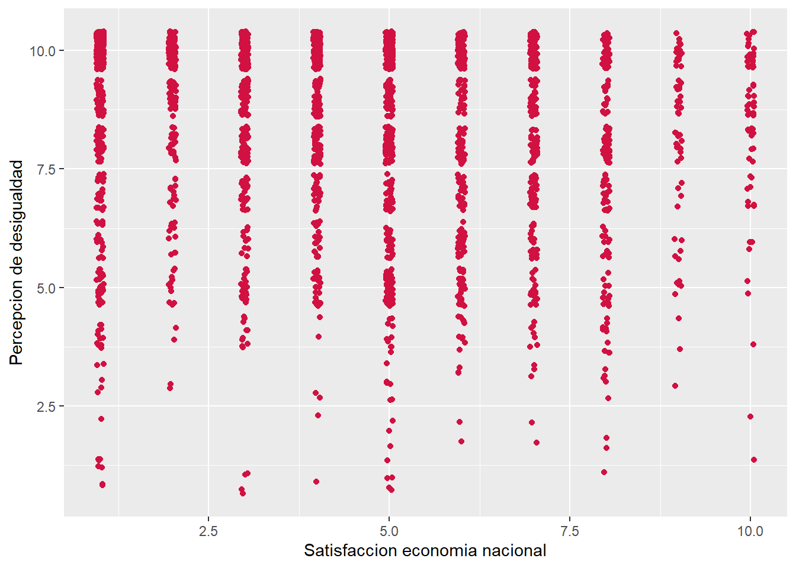
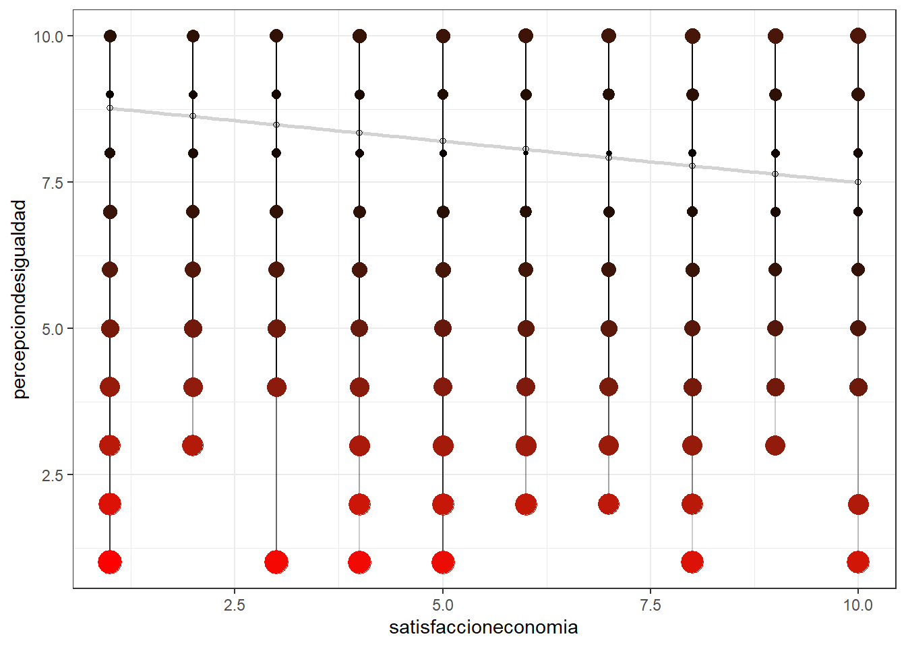

La satisfacción con la economía nacional resulta fundamental en la comprensión del bienestar democrático, como así también, la percepción que tiene la población sobre la magnitud de desigualdad que existe en su sociedad es fundamental en los estudios sobre legitimación y estratificación social. En el presente informe, se relacionarán ambas variables en base a los datos recaudados por el estudio Desiguales de la PNUD del 2017, con el fin de comprender cómo dos factores relevantes en la estabilidad del sistema socioeconómico y político en Chile se afectan el uno al otro, y más específicamente, como la satisfacción con la economía nacional afecta a la percepción de desigualdad que poseen los sujetos. Para aquello, se realizarán análisis descriptivos y de correlación, más la aplicación de un modelo de regresión simple a ambas variables. Los resultados dan cuenta de una relación inversa muy escasa que posee un valor explicativo también mínimo, por lo que el estudio no ofrece resultados significativos. Aun así, estas variables y muchas más se mantienen presentes con fuerza e importancia en el estudio de la ciencia social.
En materia de los estudios sociales de legitimación y democracia, analizar las percepciones y la satisfacción de los sujetos pertenecientes a una cierta población resulta relevante en la búsqueda de comprender las justificaciones, los discursos presentes y las tensiones que se viven en tal sociedad. Para diversos fenómenos de carácter macrosocial, la satisfacción que las personas muestran a favor de la economía de su país resulta del todo relevante e incluso es planteado como uno de los factores primarios a considerar en la satisfacción de la democracia en su conjunto (Anderson & Guillory en, Cereceda-Marambio & Torres-Solís, 2017). Mientras menos satisfacción con la economía, menor va a ser la satisfacción con el sistema político-democrático en general. Tan relevante como resulta la satisfacción macroeconómica, la “democracia no sólo se explica por el quehacer político y la estabilidad o crecimiento económico de un país, sino que también por aspectos que dicen relación con la percepción de los derechos políticos-civiles y los valores de la igualdad” (Cereceda-Marambio & Torres-Solís, 2017, p. 38). La desigualdad, sus implicancias y consecuencias, en particular en el caso chileno, tienen un lugar indispensable en la convivencia en sociedad. Garretón & Cumsille (n.d.) señalan que una alta percepción de desigualdad en el país fragmenta los principales valores de la sociedad y la idea de comunidad, creando una situación de incertidumbre e inquietud hacia el futuro de los sujetos. Según datos del estudio Desiguales de la (Palet et al., 2017), entre el 2000 y el 2016 el porcentaje de población chilena que afirma que las diferencias de ingresos en el país son muy grandes ha subido de 42% a 52%, además de señalar que el 1% más rico capta el 33% de los ingresos generados de economía nacional (Banco Mundial en (Palet et al., 2017)).
En el presente informe se hará relación de la satisfacción en la economía del país y la percepción de magnitud de la desigualdad, entendiendo que ambas variables juegan un rol importante en fenómenos de legitimación y satisfacción con el modelo político-económico y social en el cual se vive. Ahora bien, la percepción de la magnitud de desigualdad en el país será tomada como variable dependiente de la satisfacción con la economía nacional, que será la variable independiente. Se revisará su correlación y regresión en miras de captar cómo un factor determinante de la satisfacción con el modelo (la satisfacción económica) afecta un factor relevante en la legitimización y estabilidad del mismo (grado de desigualdad).
Se hará uso de la base de datos generada por el Área de Reducción de Pobreza y Desigualdad del Programa de Naciones Unidas Para el Desarrollo (PNUD) en la investigación (2015-2017) del proyecto Desiguales. La PNUD tiene entre sus objetivos proveer contenido al debate y discusión de la desigualdad y las políticas públicas, y este proyecto se enmarca en la cuantificación de datos referentes a desigualdad socioeconómica.
La base de datos cuenta con 2.613 casos (sujetos encuestados presencialmente en sus hogares) y usaremos 2 de las 329 variables originales, con un error muestral de 2,1% y un nivel de confianza del 95%. La muestra se compone de hombres y mujeres mayores de 18 años, de distintos niveles socioeconómicos y de residencia (rural/urbana/de difícil acceso).
Como se mencionó anteriormente, las variables ha utilizar son:
Satisfacción con economía país: Cuan satisfecho o insatisfecho se encuentran los sujetos con la situación económica de Chile en una escala de 1 a 10, donde 1 es “completamente insatisfecho” y 10 es “completamente satisfecho”.
Percepción de desigualdad: Cuan igual o desigualdad consideran los sujetos que es Chile en una escala de 1 a 10, donde 1 es “muy igual” y 10 es “muy desigual”.
En la siguiente tabla se puede observar las tendencias centrales y de distribución de ambas variables. En primer lugar, nuestra variable dependiente muestra su mayor concentración en la opción 10, con un 42% de los sujetos indicando que considera al país muy desigual. Encontrándose la mediana de los datos en la opción 9 y siendo su media 8.3, se puede afirmar que la mayor parte de la población considera que existe un alto grado de desigualdad en Chile. En segundo lugar, la variable independiente de satisfacción con la economía posee su media en el valor 4.3, mostrando que más de la mitad de la población se encuentra entre la neutralidad a completamente insatisfecho con la economía nacional. Ambas variables poseen una desviación estándar relativamente similar, siendo la de satisfacción 2.5 y la de desigualdad 2, mostrando una baja variabilidad.
Tabla 01. Descriptiva.
| var | label | n | NA.prc | mean | sd | range |
|---|---|---|---|---|---|---|
| percepciondesigualdad | Percepcion de desigualdad | 2607 | 0.2296211 | 8.300345 | 2.010890 | 9 (1-10) |
| satisfaccioneconomia | Satisfaccion con economía país | 2577 | 1.3777268 | 4.265813 | 2.480899 | 9 (1-10) |
Fuente: Elaboración propia a partir de PNUD (2017)
En el siguiente gráfico de nube de puntos, podemos observar la correlación de ambas variables entre sí. A primera vista, vemos que una distribución neutral, no mostrando una correlación marcada entre las variables. Ahora bien, se puede apreciar que los casos se concentran mayoritariamente en los puntajes altos de la percepción de desigualdad, y van disminuyendo hacia los puntajes altos de la satisfacción económica. Esto lo podíamos observar ya en la descripción hecha previamente de ambos fenómenos, cuando mencionábamos que la muestra considera muy desigual al país y se encuentra entre neutral y completamente insatisfecha con la economía nacional.
Gráfico 01. Correlación en nube de puntos. 
Fuente: Elaboración propia a partir de PNUD (2017)
Para un análisis más específico, vemos en la matriz que su correlación corresponde a -0.17. Esto significa que posee una baja intensidad y es de sentido negativo, ósea, de relación inversa. Mientras menos sea la satisfacción con la economía nacional, mayor será la percepción de desigualdad (pero recalcando, es una relación de muy baja intensidad).
Tabla 02. Matriz de correlación.| Percepcion de desigualdad | Satisfaccion economia nacional | |
|---|---|---|
| Percepcion de desigualdad | ||
| Satisfaccion economia nacional | -0.174*** | |
| Computed correlation used pearson-method with listwise-deletion. | ||
Fuente: Elaboración propia a partir de PNUD (2017)
Para adentrarnos más profundo en la relación que poseen ambas variables, ahora vamos a revisar la relación entre ambas variables en la siguiente formula:
\(perc. desigualdad\wedge = \beta 0 + \beta 1 * sat. economía\)
Mientras los nombres de las variables corresponden a los valores que estas mismas pueden tomar, b0 corresponde al intercepto de la recta de regresión que se muestra en el gráfico de más adelante (ósea, el valor de percepción de desigualdad respecto al valor mínimo de satisfacción con la economía) y b1 corresponde al coeficiente de regresión de la ecuación, es decir, cuánto aumenta la percepción de desigualdad por cada valor que tome la satisfacción económica.
Tabla 03. Modelo de regresión.| Percepcion de desigualdad | ||
|---|---|---|
| Predictors | Estimates | p |
| (Intercept) | 8.91 | <0.001 |
|
Satisfaccion economia nacional |
-0.14 | <0.001 |
| Observations | 2571 | |
| R2 / R2 adjusted | 0.030 / 0.030 | |
Fuente: Elaboración propia a partir de PNUD (2017)
Al igual que la correlación previamente vista, el coeficiente de correlación es un valor negativo de poca intensidad, lo que quiere decir que por cada valor de satisfacción con la economía que se aumente, la percepción de la desigualdad disminuirá un 0.14 (cabe recalcar que si bien disminuye, esto es en términos de la escala de codificación; en terminos lógicos, vendría a significar que mientras más satisfacción, se percibe mayor igualdad en el país). Esto en el lenguaje matemático recién explicado quedaría de la siguiente forma:
\(perc. desigualdad\wedge = 8.91 + (-0.14) * sat. economía\)
Esta ecuación se ilustra en el siguiente gráfico, donde se muestra el modelo de regresión con una aplicada bondad de ajustes.
Gráfico 02. Residuos en el Modelo de Regresión.
## `geom_smooth()` using formula 'y ~ x'
Fuente: Elaboración propia a partir de PNUD (2017)
La recta se muestra en una diagonal ligera de arriba hacia abajo, debido al coeficiente negativo por la relación inversa que poseen ambas variables. La distribución de los datos en el gráfico se ve tan uniforme debido a la codificación que poseen las variables, siendo ambas con valores que van de 1 a 10, teniendo solamente 100 espacios disponibles en los que distribuirse. Visualmente destaca la parte inferior del gráfico, pero esto es debido a la forma de los datos. Mientras más rojo y de mayor tamaño sea el dato es porque más se alejan de la concentración de datos y el valor predicho por la recta, significando que los más alejados y rojos poseen mayor cantidad de residuo (la distancia del valor observado al estimado), significando que el modelo no logra representar esos caso adecuadamente.
La recta oscila desde los valores 8.75 al 7.5 de la variable dependiente, siendo los datos más alejados aquellos que perciben una baja desigualdad en el país. Los datos no se acumulan en lo absoluto alrededor de la pendiente, por lo que la mayoría sino todos poseen alguna cantidad de residuo a su valor estimado. Sumado a aquello, la bondad de ajuste de nuestro modelo nos entrega un R2 (estadístico que refiere a cuánto de la variable dependiente estamos logrando explicar en su relación con la variable independiente) de 3%, lo que resulta un valor infimo para entender el funcionamiento del fenómeno de interés.
Tanto en la correlación como en la regresión de ambas variables se muestra que tienen una relación muy escasa entre ellas. Una posible explicación de este resultado puede recaer en que ambas variables, pese a formar parte de constructos de mayor escala, como la satisfacción con la democracia o legitimación del modelo imperante, posean distintos factores causales, por lo que no se distribuyen conjuntamente al ser gatilladas por distintas razones. Otra posible explicación es que los sujetos, al responder ambas preguntas por separado, disocien la relación del exponencial desarrollo económico de Chile con la existencia y aumento de la desigualdad que se provoca en el país. Aun así, es necesario recalcar que el valor explicativo del modelo es mínimo, por lo que no podemos dar respuestas precipitadas a estos resultados.
Pese a no haber encontrado resultados concluyentes, la percepción de desigualdad de los individuos de una sociedad sigue siendo fundamental en los estudios sociales, y sería interesante analizar su relación no con la satisfacción económica nacional, sino con la personal. Cereceda-Marambio & Torres-Solís (2017), tratando de perfeccionar el modelo existente para analizar la satisfacción a la democracia, encontraron que la satisfacción de la economía personal no resulta productiva en el modelo, asociando este suceso a una posible explicación meritocrática, provocando que los sujetos separasen el modelo macroeconómico a las experiencias individuales de la economía. Debido a que la desigualdad tiende a ser justificada por aquel mismo discurso meritocrático, ambos fenómenos podrían compartir un mismo origen, resultando interesante en materias de legitimación que tanto un suceso experiencial como otro de carácter perceptivo y societal sean provocados por el mismo discurso que entraña las lógicas que sujetan y reproducen el sistema hegemónico actual.
## R version 4.0.0 (2020-04-24)
## Platform: x86_64-w64-mingw32/x64 (64-bit)
## Running under: Windows 10 x64 (build 18362)
##
## Matrix products: default
##
## locale:
## [1] LC_COLLATE=Spanish_Chile.1252 LC_CTYPE=Spanish_Chile.1252
## [3] LC_MONETARY=Spanish_Chile.1252 LC_NUMERIC=C
## [5] LC_TIME=Spanish_Chile.1252
##
## attached base packages:
## [1] stats graphics grDevices utils datasets methods base
##
## other attached packages:
## [1] sessioninfo_1.1.1 ggplot2_3.3.0 corrplot_0.84 sjPlot_2.8.3
## [5] kableExtra_1.1.0 summarytools_0.9.6 sjmisc_2.8.4 stargazer_5.2.2
## [9] sjlabelled_1.1.4 dplyr_0.8.5
##
## loaded via a namespace (and not attached):
## [1] httr_1.4.1 tidyr_1.1.0 viridisLite_0.3.0 splines_4.0.0
## [5] modelr_0.1.8 assertthat_0.2.1 statmod_1.4.34 highr_0.8
## [9] pander_0.6.3 yaml_2.2.1 bayestestR_0.6.0 pillar_1.4.4
## [13] backports_1.1.6 lattice_0.20-41 glue_1.4.1 digest_0.6.25
## [17] pryr_0.1.4 checkmate_2.0.0 rvest_0.3.5 minqa_1.2.4
## [21] colorspace_1.4-1 htmltools_0.5.0 Matrix_1.2-18 plyr_1.8.6
## [25] pkgconfig_2.0.3 broom_0.5.6 magick_2.3 purrr_0.3.4
## [29] xtable_1.8-4 mvtnorm_1.1-0 scales_1.1.1 webshot_0.5.2
## [33] lme4_1.1-23 emmeans_1.4.6 tibble_3.0.1 mgcv_1.8-31
## [37] farver_2.0.3 generics_0.0.2 ellipsis_0.3.0 withr_2.2.0
## [41] pacman_0.5.1 cli_2.0.2 magrittr_1.5 crayon_1.3.4
## [45] effectsize_0.3.1 estimability_1.3 evaluate_0.14 fansi_0.4.1
## [49] nlme_3.1-147 MASS_7.3-51.5 xml2_1.3.2 rapportools_1.0
## [53] tools_4.0.0 hms_0.5.3 lifecycle_0.2.0 matrixStats_0.56.0
## [57] stringr_1.4.0 munsell_0.5.0 ggeffects_0.14.3 compiler_4.0.0
## [61] rlang_0.4.6 grid_4.0.0 nloptr_1.2.2.1 parameters_0.7.0
## [65] rstudioapi_0.11 labeling_0.3 tcltk_4.0.0 base64enc_0.1-3
## [69] rmarkdown_2.1 boot_1.3-24 gtable_0.3.0 codetools_0.2-16
## [73] sjstats_0.18.0 R6_2.4.1 lubridate_1.7.8 knitr_1.28
## [77] performance_0.4.6 insight_0.8.4 readr_1.3.1 stringi_1.4.6
## [81] Rcpp_1.0.4.6 vctrs_0.3.0 tidyselect_1.1.0 xfun_0.14Cereceda-Marambio, K., & Torres-Solís, A. (2017). Satisfacción con la democracia en Chile: De lo normativo a lo valorativo. Revista de Sociología, 32, 32. https://doi.org/10.5354/0719-529X.2017.47884
Garretón, M. A., & Cumsille, G. (n.d.). Las percepciones de la desigualdad en Chile. Proposiciones, 34, 9.
Palet, A., Aguirre, P. de, & Chile, P. (Eds.). (2017). Desiguales: Orígenes, cambios y desafíos de la brecha social en Chile. PNUD : Uqbar Editores.